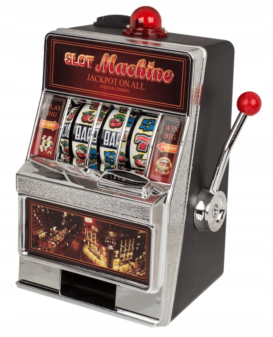
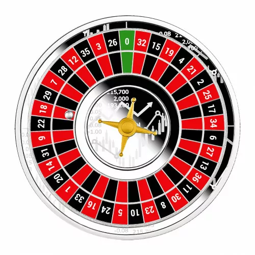

Automaty
Automaty hazardowe, zwane również automatami do gier, jednorękimi bandytami (ze względu na tradycyjną dźwignię) lub slotami

Blackjack
Blackjack, znany również jako „21”, to popularna gra karciana, która jest powszechnie grana w kasynach na całym świecie. Oto najważniejsze informacje na temat tej gry:

Ruletka
Roletka, znana również jako ruletka, to popularna gra hazardowa, która jest często spotykana w kasynach na całym świecie. Oto szczegółowe informacje na temat ruletki: